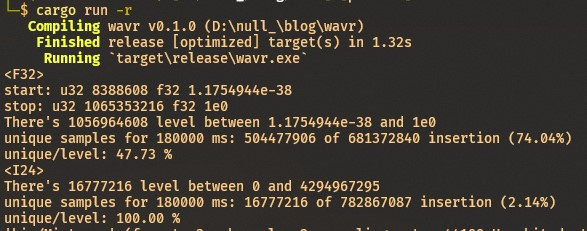
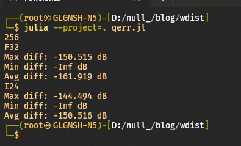

Setelah membahas sedikit tentang dasar sistem floating-point pada bagian pertama, mari kita lanjutkan pembahasan secara lebih spesifik mengenai perbandingan 24-bit integer vs. 32-bit floating-point.
Sebagai pengingat, dalam dunia musik sering kali bit depth hanya disebutkan nilainya, tanpa embel-embel integer, floating-point, dsb. Hal ini lumrah dilakukan karena dalam dunia audio professional, hanya 3 mode yang sering digunakan: 16 dan 24-bit integer dan 32-bit floating-point meskipun faktanya di luar itu juga terdapat 16-bit floating-point, 32-bit integer, dsb. Perhatikan video berikut yang tidak menyinggung integer ataupun floating-point, tetapi secara implisit membandingkan kedua tipe tersebut.
Headroom
Sekilas kelebihan dari 32-bit floating-point yang dapat diperhatikan adalah terkait headroom-nya, dimana floating-point dapat menyimpan data dengan gain yang sangat besar bahkan hingga beberapa ratus dB di atas 0 dBFS tanpa memperkenalkan distorsi akibat clipping seperti yang terjadi pada tipe integer yang instan muncul ketika sinyal melewati 0 dB. Kenapa hal ini dapat terjadi?
Artikel ini dan artikel bagian pertama membatasi bahasan pada floating-point 32-bit yang terstandardisasi dalam IEEE 754 (IEEE Standard for Floating-Point Arithmetic) binary32 (single-precision floating-point format), yang dalam artikel ini akan dirujuk secara bergantian sebagai “floating-point”, float, ataupun float32. Floating-point dengan lebar data lainnya, seperi double-precision (64-bit), memiliki struktur yang berbeda dan mungkin akan dibahas di lain kesempatan.
Dari -1 Ke 1
Jawaban dari pertanyaan di atas ialah meskipun format float32 mampu menyimpan data yang sangat besar, hingga \(3.40 \times 10 ^{38}\), penggunaan float32 pada dunia audio menggunakan nilai ternormalisasi. Dengan kata lain, dalam dunia digital audio, nilai yang digunakan hanya pada rentang \(-1\) hingga \(1\), dan umumnya juga dibatasi menggunakan nilai normal.
Apa konsekuensi dari hal ini? Dengan begitu maka 0 dBFS berada pada nilai \(-1\) atau \(1\), dan dapat menyimpan nilai yang lebih besar \(3.40 \times 10 ^{38}\) (\(+770\;\mathrm{dB}\)) kali ataupun \(8.51 \times 10 ^{38}\) kali lebih kecil (\(-759\;\mathrm{dB}\)) relatif dari 0 dBFS. Sangat besar (dan kecil) dan sangat lebih dari cukup untuk mendukung rekaman audio seekstrim apa pun.
Ingin tahu dari mana angka itu muncul? Mari kita gunakan bantuan pemrograman yaitu dengan Python dan modul numpy.
Dimulai dengan mengimpor numpy:
Kemudian anda dapat melihat nilai-nilai penting, seperti nilai terbesar, terkecil, epsilon, dsb. (detail) dari float32 dengan fungsi np.finfo:
Nilai terbesar dan terkecil (relatif terhadap 0) dari informasi di atas ialah max dan tiny.
Selanjutnya, definisikan fungsi untuk mengkonversi nilai gain (magnitude) ke nilai desibel yang memiliki rumus \(d=20\log_{10}(M)\):
Gunakan mag2db untuk menentukan range desibel dari float32:
Mubazir?
Sebagian dari kita kemudian bertanya-tanya “kenapa hanya digunakan rentang \(-1\) ke \(1\) saja?”, “kenapa tidak dimaksimalkan seperti pada integer?”, atau “lalu apakah data yang berada diluar rentang \(-1\)-\(1\) akan tersia-siakan saja?”, dan sebagainya.
Jawabannya berada pada kata floating-point itu sendiri.
Bagian 1 dari artikel ini telah membahas cara kerja float yang menunjukkan bahwa posisi desimal (koma) pada bilangan float bersifat tidak tetap (floating), berbeda dengan tipe data fixed-point. Pada representasi float selalu hanya ada satu digit di depan koma (pada mode normal selalu bernilai 1 dan implisit), dan nilai yang berbeda direpresentasikan dengan nilai eksponen dan koefisien/mantissa yang berbeda.
Sebagai contoh, karena hanya 1 digit di depan koma, maka float tidak dapat menyimpan 1011.001 secara langsung, tetapi bentuk tersebut dapat diubah ke 1.011001 * 10101 (atau \(2^3\) dalam desimal) yang dapat disimpan oleh float. Mekanisme seperti ini lah yang membuat float dapat menyimpan angka yang sangat besar dan sangat kecil. Tetapi disamping itu, terdapat satu hal yang menjadi konsekuensi hal di atas: semakin kecil angka yang direpresentasikan float, semakin tinggi resolusinya. Sehingga digunakanlah nilai ternormalisasi pada rentang \([-1,1]\) untuk memaksimalkan resolusi sinyal.
Untuk mempermudah, mari kita analogikan dengan bilangan desimal. Misalkan anda sedang mengisi isian biodata untuk sebuah pendaftaran, dan kemudian anda sampai pada isian tinggi badan. Pada formulir ini, diberikan 6 kotak untuk mengisi angka tinggi badan, dengan catatan semua kotak harus terisi tetapi anda bebas untuk meletakkan dimana posisi koma, apakah di antara kotak 1 dan 2, 2 dan 3, dan seterusnya.
Misalkan tinggi badan anda adalah tepat \(174\) cm, maka anda akan mengisi \(174.000\) pada isian tersebut dan meletakkan koma antara kotak 3 dan 4. Pertanyaannya adalah, jika angka paling kanan diubah 1 digit, berapakah perubahan yang terjadi pada angka? Pada isian anda, misalkan angka terkakhir diubah 1 sehingga menjadi \(174.001\), maka perubahan angka yang terjadi ialah \(0.001\). Nilai tersebut merupakan perubahan terkecil yang masih dapat direkam oleh isian 6 kotak tersebut, dalam matematika sering disebut sebagai epsilon (\(\varepsilon\))1.
\[ \boxed{1}\boxed{7}\boxed{4},\boxed{0}\boxed{0}\boxed{0} \]
Bagaimana jika selanjutnya dengan aturan yang sama, anda diperintahkan mengisi isian berat badan? Misalkan kali ini anda dengan lebih detail mengetahui berat anda \(89.5\) kg, maka isian kotak anda ialah \(89.5000\). Perhatikan bahwa kali ini, \(\varepsilon\) menjadi \(10\) kali lebih kecil (\(0.0001\)) dengan posisi desimal yang berubah satu tempat. \(\varepsilon\) yang semakin kecil menunjukkan nilai yang semakin presisi.
\[ \boxed{8}\boxed{9},\boxed{5}\boxed{0}\boxed{0}\boxed{0} \]
Lalu kenapa tidak digunakan nilai subnormal untuk merepresentasikan nilai tersebut? Angka yang direpresentasikan diantara \(-1\) dan \(1\) sehingga wajar menggunakan subnormal yang diawali dengan \(0.\) bukan? Jawababnya adalah karena nilai pada rentang subnormal memiliki performa pemrosesan yang lebih lambat2. Bahkan, sering kali dalam beberapa kondisi yang membutuhkan performa lebih, rentang subnormal dapat saja dinonaktifkan (sebagai contoh dalam algoritma pemrosesan VST3)
24-Bit Signed Integer vs 32-Bit Floating-Point
Kembali ke pertanyaan pemicu dari seri artikel ini, “Seberapa jauh perbedaan kualitas 24-bit int dengan 32-bit FP?”. Sekilas, cukup dari lebar data kita bisa saja menyebut bahwa float32 memiliki resolusi sebesar \(2^{31-23} = 256\) kali resolusi int24. Tetapi, mengingat aturan representasi pada float tidak sesederhana pada int, maka kita akan mencoba menghitung level kuantisasi pada masing-masing tipe, dimana kualitas dari tipe data pembawa sinyal dapat dilihat dari jumlah level kuantisasi ini (divisualisasikan di laman ini, yang pada jenis data integer memiliki hubungan \(N=2^b\) dengan \(N\) jumlah level kuantisasi dan \(b\) bit-depth.
Dari sini, dapat kita ketahui untuk tipe 24-bit integer, yang dalam dunia audio menggunakan data type unsigned int, memiliki nilai \(0\) atau \(-\infty\;\mathrm{dB}\) sebagai nilai minimum dan \(2^{23}-1=8388607\) sebagai nilai maksimum (\(0\;\mathrm{dB}\)). \(8 388 607\) adalah jumlah level kuantisasi pada satu sisi gelombang pada int24, di sini dapat disebut sebagai resolusinya.
Bagaimana dengan float? Karena aturannya yang lebih rumit dan rentang yang dibatasi \(\pm 1\), maka kita akan mengunakan bantuan pemrograman, kali ini dengan bahasa pemrograman rust yang mempermudah manipulasi tipe data float (f32). Kita akan mencoba melakukan beberapa pengujian terhadap float32 dan int24.
1. Menghitung level kuantisasi float32
Seperti pada int24 di atas, kita akan menghitung resolusi satu sisi (\(0\) ke \(+1\)), dilambangkan \(N_{Q_{[\mathrm{Nmin},1]}}\).
Program dimulai dengan definisi start dan stop yang menyimpan data biner masing-masing nilai normal terkecil dan satu4, dalam bentuk biner dan direpresentasikan dalam notasi heksadesimal.
let start = 0x00800000; // == 0b00000000_10000000_00000000_00000000 == 1.175494e-38
let stop = 0x3f800000; // == 0b00111111_10000000_00000000_00000000 == 1.00x00800000?
Selanjutnya, masing-masing representasi biner tersebut dicast menjadi bilangan float32 dengan memanfaatkan method from_bits dari tipe f326:
Kemudian variable step dan current digunakan untuk masing-masing menghitung jumlah level dan menyimpan nilai level sementara:
Perhitungan dilakukan dengan memanfaatkan method next_up dari tipe f32 yang memberikan nilai f32 selanjutnya yang dapat direpresentasikan oleh data tersebut7. Menggunakan loop while, program menghitung jumlah nilai-nilai yang mungkin antara fstart dan fstop.
Selanjutnya kita gunakan kode berikut untuk menampilkan jumlah step yang kita cari, disamping nilai awal dan nilai akhir yang telah ditentukan:
println!("start: u32 {} f32 {:e}", start, fstart);
println!("stop: u32 {} f32 {:e}", stop, fstop);
// ...
println!("There's {} level between {:e} and {:e}", step, fstart, fstop);Maka program akan memberikan output:
start: u32 8388608 f32 1.1754944e-38
stop: u32 1065353216 f32 1e0
There's 1056964608 level between 1.1754944e-38 and 1e0Dapat dilihat bahwa terdapat \(1056964608\) level antara nilai tengah (digantikan nilai normal minimum disini) dengan nilai maksimum (\(1.0\)). Sementara, int24 memberikan nilai \(8388608\) sehingga terdapat rasio perbedaan sebesar \(126\), meleset \(2\) (dari \(256\)) kali lipat jika dihitung secara sederhana dari perbedaan jumlah bit kedua tipe data tersebut.
Jika anda mencoba menjalankan program diatas antara dua perpangkatan \(2\) (yaitu \(1\) dan \(2\), \(2\) dan \(4\), \(4\) dan \(8\), dan seterusnya) maka nilai \(8388608\) akan selalu keluar sebagai output dari program di atas. Nilai tersebut adalah \(2^23\) atau memiliki lebar yang tepat sama dengan lebar data mantissa/koefisien pada float32. Mengapa hal tersebut dapat terjadi?
\(126\) kali lipat bukanlah rasio yang kecil untuk perbandingan resolusi, sebagai contoh perbandingan resolusi gambar dengan membandingkan jumlah pixel 4K (\(3840\times2160\)) dengan 360p (\(640\times360\)) hanya mencapai \(36\) kali, hampir 4 kali lebih kecil dari perbandingan resolusi float32 dan int24, dan tentu pembaca tahu bagaimana perbedaan kualitas antara 4K dengan 360p.
Kesimpulan 1: Sebuah sinyal
float32akan memiliki resolusi 126 kali resolusi sinyalint24.
2. Level kuantisasi yang digunakan pada sebuah file WAV
Selanjutnya, mari lakukan analisis dari sisi praktis, yaitu dengan menghitung jumlah level yang terpakai pada sebuah file WAV. Pertanyaannya adalah apakah sebuah file float32 akan menggunakan semua \(2\times1056964608\approx2.113\times10^9\) dan apakah file int24 akan menggunakan semua \(2^{24}=16,777,216\)?
Langkah dalam melakukan percobaan ini ialah dengan membuka sebuah file WAV, lalu menyimpan setiap nilai titik sample ke sebuah set yang hanya menyimpan nilai yang unik dan kemudian menghitung jumlah elemen pada set tersebut untuk menemukan jumlah level yang digunakan oleh masing-masing format. Karena perbandingan sesama bilangan float merupakan hal yang rumit8, maka kita gunakan represenasi binernya dalam bentuk int32.
Program menggunakan std::collections::HashSet dari standard library untuk struktur data set yang dibutuhkan dan crate wav untuk mempermudah pembacaan file WAV.
Misalkan file bernama “sound.wav”, maka selanjutnya data dan header (yang berisi informasi seperti sample rate, bit depth, dsb.) dapat dibaca dengan cara berikut:
let filename = "sound.wav";
let mut sound = File::open(Path::new(filename))?;
let (header, data) = wav::read(&mut sound)?;Jangan lupa deklarasikan set yang akan digunakan:
Selanjutnya, sesuai dengan cara kerja crate wav dimana variable data yang didapat dari method wav::read adalah sebuah enumerasi bit depth, maka kita akan melakukan pattern matching, dalam hal ini kita hanya peduli dengan ThirtyTwoFloat sebagai float32 dan TwentyFour sebagai int24:
match data {
BitDepth::ThirtyTwoFloat(v) => { /* proses tipe float32 dalam v */},
BitDepth::TwentyFour(v) => {/* proses int24 */},
_ => {/* abaikan bit depth lainnya */},
}Pada ThirtyTwoFloat, kita hanya perlu melakukan insersi data sample yang telah dikonversi ke bentuk biner dalam tipe u32 yang diperoleh dengan method f32::to_bits:
Semantara itu, pada TwentyFour, kita perlu menyentuh unsafe karena data yang dibaca adalah i32, sementara untuk menyamai dengan case di atas, HashSet yang kita gunakan hanya akan menerima u32, untuk itu kita akan melakukan konversi transmute pada Rust yang harus dilakukan dalam blok unsafe:
// ...
BitDepth::TwentyFour(v) => {
for sample in v {
let as_u32: u32;
unsafe {
as_u32 = mem::transmute(sample);
}
set.insert(as_u32);
}
},
// ...Terakhir, setelah melakukan proses di atas dalam pattern matching, informasi-informasi yang didapatkan dapat ditampilkan kurang lebih seperti:
println!(
"'{}' (format: {}, channels: {}, sampling rate: {} Hz, bit depth: {} bits) has {} uniques samples",
filename,
header.audio_format,
header.channel_count,
header.sampling_rate,
header.bits_per_sample,
set.len()
);Kode di atas akan menampilkan nama file, audio format (\(1\) untuk int, \(3\) untuk float), sampling rate, bit depth dan jumlah level yang digunakan yang kita cari. Sebagai contoh:
'sound.wav' (format: 3, channels: 1, sampling rate: 44100 Hz, bit depth: 32 bits) has 485123 uniques samplesUntuk analisis ini, penulis melakuka pengujian pada beberapa file audio dengan format dan sinyal yang berbeda untuk melihat perbandingan level yang digunakan (“XXX” pada nama file berarti “f32” atau “i24” tergantung fotmat):
| Nama File | Level float32 |
Level int24 |
Keterangan |
|---|---|---|---|
| s1024XXX.wav | 219876 | 219249 | pure 1024 Hz sine, 44.1 kHz |
| nXXX.wav | 220131 | 217022 | white noise, 44.1 kHz |
| s1024XXX-192k.wav | 947845 | 935675 | pure 1024 Hz sine, 192 kHz |
| nXXX-192k.wav | 953713 | 642765 | white noise, 192 kHz |
Sekilas dapat kita lihat dari jumlah level yang digunakan, sample rate lebih berpengaruh dari pada bit depth, float32 dan int24 juga menggunakan jumlah level yang relatif sama pada sample rate yang sama. Bahkan, bentuk sinyal, meskipun sama-sama minimal dibanding dengan sample rate, lebih berpengaruh terhadap jumlah level yang digunakan ketimbang bit depth.
Yang menarik bagi penulis, dan mungkin juga sebagaian dari pembaca, adalah nilai level yang digunakan oleh int24 pada white noise dengan sample rate 192 kHz, kenapa terjadi drop level yang sangat signifikan, hingga lebih dari 30% dibanding float32?
| Nama File | Level float32 |
Level int24 |
Keterangan |
|---|---|---|---|
| s1024XXX.wav | 11045 | 102921 | pure 1024 Hz sine, 44.1 kHz |
| nXXX.wav | 32722 | 160907 | white noise, 44.1 kHz |
| s1024XXX-192k.wav | 2934 | 8117 | pure 1024 Hz sine, 192 kHz |
| nXXX-192k.wav | 32768 | 355430 | white noise, 192 kHz |
Tabel di atas, dengan sampel dibuat dengan software yang berbeda, menghasilkan nilai yang lebih tidak terprediksi, tetapi dengan satu hal yang konsisten: sampel unik yang digunakan oleh format float32 selalu lebih kecil dari int24. Apa yang sebenarnya terjadi?
Kesalahan algoritma? Untuk itu penulis melakukan verifikasi algoritma program dengan menulis program lain dengan bahasa pemrograman Julia yang mempermudah membaca sampel unik pada sebuah file WAV:
using WAV
dir = "bin"
files = readdir(dir)
# membaca tiap file di dalam folder "bin"
for file in files
filename = joinpath(dir, file)
y, fs = wavread(filename, format="native") # membaca file wav sebagai array denga tipe sesuai format WAV
println(filename)
println(typeof(y))
println(length(unique(y))) # menampilkan jumlah elemen dengan nilai unik pada array sampel
println()
endDan didapatkan hasil yang serupa dengan program di atas, sehingga dapat disebut tidak terdapat kesalahan pada algoritma program. Verifikasi selanjutnya adalah dengan membaca sebuah file musik yang di render native ke float32 (juga memberikan nilai sampel unik yang rendah, jauh di bawah level kuantisasi). Pun demikian ketika penulis mencoba menghitung nilai unik dari generasi nilai random terus menerus dalam kurun waktu tertentu: meskipun nilai random yang dikeluarkan hampir selalu unik, jumlahnya tidak seberapa dibanding level kuantisasi yang tersedia.

Dari gambar di atas, pada bagian float (“<F32>”), terlihat bahwa terdapat lebih dari 1 milyar level (\(1\;056\;964\;608\)) kuantisasi antara nilai normal minimal (\(1.1755\cdot10^{-38}\)) dan \(1.0\). Generasi nilai random selama \(3\) menit (\(180\;000\) milidetik) memberikan \(502\;727\;841\) nilai unik dari \(678\;049\;968\), dengan kata lain \(74\;\%\) sample yang digenerasi memiliki nilai yang unik. Jumlah nilai unik yang dihasilkan adalah \(48\;\%\) dari nilai yang digenerasi.
Sementara itu, pada “<I24>”, sample unik yang dihasilkan hanya \(2\;\%\) dari sampel yang dihasilkan. Hal tersebut terjadi karena semua level kuantisasi yang ada telah digunakan seluruhnya \(16\;777\;216=2^{24}\), sehingga rasio nilai unik dan level kuantisasi menjadi \(100\;\%\). Hal ini setidaknya bisa memberikan gambaran kenapa level terpakai pada sebuah file float32 cenderung lebih sedikit dari int24 pada beberapa kasus. Dan hal ini tidak mempengaruhi kualitas format karena lebih berhubung dengan kondisi sinyal itu sendiri.
3. Quantization Error
Pengujian terakhir dan mungkin yang dapat menjawab pertanyaan dari artikel ini ialah pengukuran quantization error (QE), yaitu perubahan yang terjadi pada sinyal digital akibat adanya pembulatan nilai karena jumlah level kuantisasi yang terbatas. Sekilas, menurut intuisi, dengan semakin besar lebar data maka semakin kecil pula QE yang didapatkan. Secara matematis, nilai QE maksimum didapatkan sebagai selisih antar level kuantisasi: \(\frac{1}{2^N}\), dalam desibel menjadi:
\[ e=20\log{\frac{1}{2^N}} \tag{1}\]
Nilai QE maksimum juga dikenal sebagai tingkat noise floor dari sebuah format rekaman digital. Noise floor sebenarnya dari sebuah rekaman sendiri juga dipengaruhi oleh noise selama rekaman, noise perangkat analog, dan sebagainya.
Dari persamaan tersebut, didapatkan QE data dengan \(N\) 24-bit memiliki maksimum error \(-144.49\) dB dan 32-bit \(-192.66\) dB. Tetapi pada praktiknya, apakah benar demikian, mengingat pada float32 nilai yang digunakan hanya dibatasi pada rentang \(-1<n<1\)? Maka sekali lagi kita menggunakan bantuan pemrograman, kali ini kembali dengan Julia:
using WAV
using Printf
"""
Convert linear value to decibel
"""
m2d(x::AbstractFloat)::AbstractFloat = 20 * log10(x)
println(precision(BigFloat))
# sample rate, signal duration, and signal freq
fs = 192e3
T = 5
f = BigFloat(1440.0)
# time space, output
t = range(BigFloat(0.0), prevfloat(BigFloat(T * 1.0)), length=convert(Integer, T * fs))
y = 0.5 * sin.(2pi * f * t) .+ sin.(2pi * 2 * f * t) * 0.5
# down convert to f32
yf32 = convert(Array{Float32}, y)
# original vs f32 diff.
dyf32 = abs.(y .- convert(Array{BigFloat}, yf32))
println("F32")
@printf "Max diff: %.3f dB\n" m2d(maximum(dyf32))
@printf "Min diff: %.3f dB\n" m2d(minimum(dyf32))
@printf "Avg diff: %.3f dB\n" m2d(sum(dyf32) / length(dyf32))
# manual map to value limited (2^23) i32
yi24 = map(x -> convert(Int32, round(x * 2^23)), y)
# ori. vs i32(i24) diff.
dyi24 = abs.(y .- convert(Array{BigFloat}, map(x -> x / (2^23), yi24)))
println("I24")
@printf "Max diff: %.3f dB\n" m2d(maximum(dyi24))
@printf "Min diff: %.3f dB\n" m2d(minimum(dyi24))
@printf "Avg diff: %.3f dB\n" m2d(sum(dyi24) / length(dyi24))Program tersebut membuat sebuah input dengan tipe data BigFloat, sebuah tipe dari library GNU MPFR yang memiliki presisi jauh diatas float32, float64, dan float128 sekalipun. Input dengan tipe tersebut digunakan sebagai acuan dan kemudian dikonversi masing-masing ke float32 dan int32 (dengan simulasi i24 dengan mengalikan nilai ternormalisasi dengan \(2^{32}\)). Proses konversi ini akan “memangkas” informasi acuan sehingga dapat dimuat ke tipe yang lebih rendah. QE kemudian dihitung dengan melihat perbedaan antara nilai acuan dengan masing-masing data float32 dan int32 yang dikonversi kembali ke BigFloat. Dari program tersebut di dapatkan hasil sebagai berikut:

Menarik, bukan? Sementara int24 memiliki QE maksimum sesuai dengan persamaan (Perhitungan 1) di atas, yaitu \(-144.4\) dB, float32 melesat tinggi menjadi \(-150.515\) dB alih-alih \(-192\) dB, atau sekitar \(46\) dB (\(125\) kali) lebih tinggi. Perhatikan bahwa nilai EQ \(-150.515\) tepat merupakan QE dari data dengan \(N=25\) bit, semenatara itu menurut perhitungan sebelumnya, rentang \(-1<n<1\) seharusnya memiliki \(2\;\times\;1\;056\;964\;608 \approx 2^{31}\), kemana perginya 6 bit data ini?
Catatan Kaki
Istilah yang lebih tepat disini sebenarnya ialah ulp atau unit of least precision, tetapi untuk tidak memperkeruh istilah, mari gunakan saja \(\varepsilon\) yang pada beberapa kondisi berkorespondensi terhadap ulp sebagai hal yang sama.↩︎
https://en.wikipedia.org/wiki/Subnormal_number#Performance_issues↩︎
https://docs.juce.com/master/classScopedNoDenormals.html, sebuah fitur high-level untuk menonaktifkan subnormal pada CPU untuk sementara pada JUCE, framework yang dapat digunakan untuk memprogram VST. Mekanisme dasarnya sendiri dapat dilihat di sini.↩︎
https://en.wikipedia.org/wiki/Single-precision_floating-point_format#Notable_single-precision_cases↩︎
https://en.wikipedia.org/wiki/Subnormal_number#Performance_issues↩︎
https://doc.rust-lang.org/std/primitive.f32.html#method.from_bits↩︎
Method
f32::next_uphingga waktu penulisan artikel ini masih berstatus eksperimental sehingga dibutuhkanrustversi nightly untuk dapat menggunakannya: https://doc.rust-lang.org/std/primitive.f32.html#method.next_up↩︎error pembulatan, batasan representasi, toleransi perbandingan, hingga algoritma membuat perbandingan dua nilai
floatmenjadi tidak pasti dan dalam pemrograman tidak dianjurkan (dianjurkan perbandingan dengan nilai toleransi yang ditentukan), https://floating-point-gui.de/errors/comparison/.↩︎